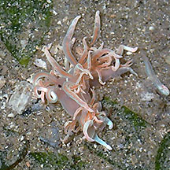
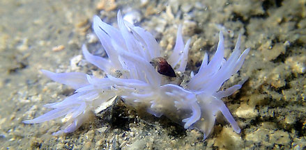
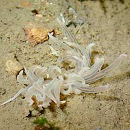
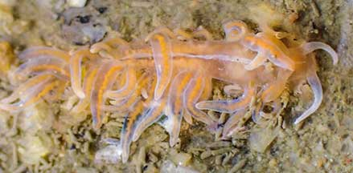
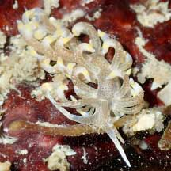
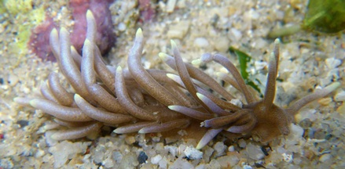

|
|
| nudibranchs text index | photo index |
| Phylum Mollusca > Class Gastropoda > sea slugs > Order Nudibranchia |
| Phyllodesmium
nudibranch Phyllodesmium sp. Family Facelinidae updated May 2020 Where seen? This 'hairy' nudibranch is sometimes seen on some of our shores. It is seen near reefs in the South as well as rocky areas in the North. Features: About 2cm long. Long, narrow, soft body with many long finger-like structures (called cerata) arranged in rows across the body. The body and cerata nurture the symbiotic zooxanthellae that continues to undergo photosynthesis and produce nutrients within the sea slug. Usually beige or brown. What does it eat? According to Bill Rudman, Phyllodesmium briareum feeds on Fine feathery soft corals (Briareum sp.). |
 Chek Jawa, Nov 17 Photo shared by Loh Kok Sheng on facebook. |
||
 Chek Jawa, Jun 23 Photo shared by Jianlin Liu on facebook. |
 Changi Creek, May 21 Photo shared by Toh Chay Hoon on facebook. |
 Pasir Ris, May 21 Photo shared by Vincent Choo on facebook. |
 Phyllodesmium macphersonae St. John's Island, Apr 22 Photo and ID shared by Toh Chay Hoon on facebook. |
 Sentosa, May 09 Photo shared by Loh Kok Sheng on his blog. |
Links
|